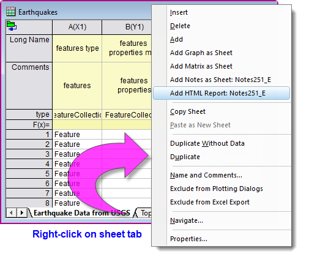
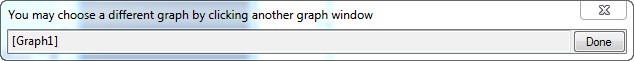
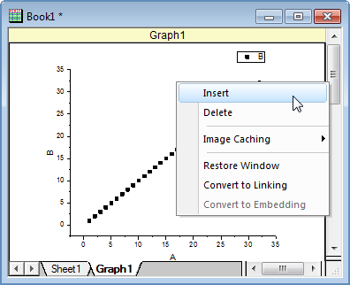
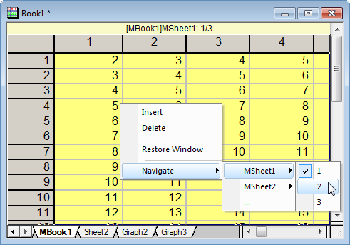
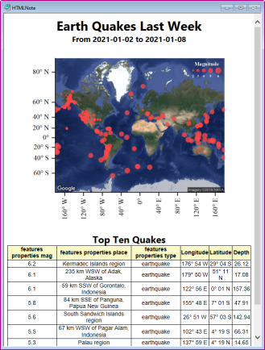

Diagramm-, Matrix-, Notizfenster oder HTML-Berichte als Blatt hinzufügen
Add-graph-matrix-as-WKS
Es kann wünschenswert sein, um andere Fenstertypen zur aktuellen Arbeitsmappe hinzuzufügen, zum Beispiel beim Erstellen von Analysevorlagen. Um dies zu tun, klicken wir mit der rechten Maustaste auf das vorhandene Blattreiter und wählen Sie eine der Optionen XXX... hinzufügen.

Beim Hinzufügen eines anderen Fenstertyps als Blatt:
- Wenn kein Fenster des gewählten Typs im aktuellen Projekt existiert, wird ein leeres Fenster zur Arbeitsmappe hinzugefügt.
- Für einen gewählten Fenstertyp wird jedes Fenster, das (1) innerhalb der letzten 40 Sekunden oder (2) einzigartig für den gewählten Fenstertyp ist, aufgelistet, um direkt zur Arbeitsmappe hinzugefügt zu werden. Bitte beachten Sie, dass der Zeitrahmen für neu erstellte Fenster durch Ändern des Werts der Systemvariablen @MMT geändert werden kann.
- Im Fall, dass der gewählte Fenstertyp in den letzten 40 Sekunden nicht aktiviert worden ist, wird ein Dialog angezeigt, in dem Sie das Fenster auswählen können, das Sie einfügen möchten.

Beim Initialisieren dieses Auswahldialogs:
- Wenn der aktuelle Ordner ein kürzlich modifiziertes Fenster hat, wird es ausgewählt, um den Dialog zu initialisieren.
- Wenn es kein kürzlich modifiziertes Fenster im aktuellen Ordner gibt, wird das aktive Fenster zum Initialisieren des Dialogs verwendet. Sie können die Systemvariable @AGF=1 verwenden, um den Zielordner zu ändern.
- Wenn das zuletzt aktive Fenster nicht geeignet ist oder das Projekt nur offen war und es kein zuletzt aktives Fenster gibt, dann wird der Dialog nicht initialisiert.
Diagramm als Blatt
Wenn Sie das Kontextmenü verwenden, um ein Diagramm als ein neues Blatt hinzuzufügen, wird der Kurzname des Diagrammfensters verwendet, um das neue Blatt zu benennen, und das Diagramm wird in die erste Zelle des aktuellen Blatts eingefügt. Klicken Sie doppelt auf das eingebettete Diagramm, um das Diagrammfenster für die benutzerdefinierte Anpassung zu öffnen. Wenn die Anpassung beendet ist, klicken Sie auf die Schaltfläche Zurück , um das Diagramm wiederherzustellen.
Klicken Sie mit der rechten Maustaste auf das eingebettete Diagramm. Sie können

- eine leere Zelle oberhalb der Zelle, in die das Diagramm eingebettet wird, einfügen.
- das eingebettete Diagramm löschen, während die Zelle, die es enthalten hat, im neuen Blatt verbleibt.
- den Bildzwischenspeicher zwischen Enhanced Metafile und Bitmap wechseln.
- das Diagrammfenster wiederherstellen, das bedeutet, das ursprüngliche Diagrammfenster wird wieder aktiviert und das Blatt mit dem eingebetteten Diagramm wird entfernt.
- das eingebettete Diagramm in eine Diagrammverknüpfung umwandeln und die Diagrammverknüpfung zurück in ein eingebettetes Diagramm umwandeln.
 |
In Arbeitsblätter eingebettete Diagramme können ohne Doppelklick auf die eingebetteten Objekte zusammengefügt und exportiert werden, um sie in separaten Fenstern zu öffnen. Sowohl der Dialog Grafiken zusammenfügen als auch der Dialog Grafik exportieren enthalten eine Option Alle im aktiven Ordner (einschließlich Eingebetteten), wenn Grafiken zum Zusammenfügen bzw. Exportieren ausgewählt sind.
Weitere Informationen können Sie auch in diesem Eintrag im Origin Blog nachlesen.
|
Matrix als Blatt
Wenn Sie das Kontextmenü verwenden, um eine Matrix als ein neues Blatt hinzuzufügen, wird der Kurzname des Matrixfensters verwendet, um das neue Blatt zu benennen, und die Matrix wird in die erste Zelle des aktuellen Blatts eingefügt. Außerdem wird das aktuell aktive Objekt in der Titelzelle gekennzeichnet. Klicken Sie doppelt auf die eingebettete Matrix, um das Matrixfenster für die Durchführung verschiedener Operationen zu öffnen. Wenn die Bearbeitung beendet ist, klicken Sie auf die Schaltfläche Zurück , um die Matrix wiederherzustellen.
Klicken Sie mit der rechten Maustaste auf die eingebettete Matrix. Sie können

- eine leere Zelle oberhalb der Zelle, in die die Matrix eingebettet wird, einfügen.
- die eingebettete Matrix löschen.
- das Matrixfenster wiederherstellen, das bedeutet, das ursprüngliche Matrixfenster wird wieder aktiviert und das Blatt mit der eingebetteten Matrix wird entfernt.
- im Matrixblatt und die Matrixobjekte navigieren. Sie können dieses Kontextmenü verwenden, um das aktive Objekt zu ändern.
Notizen als Blatt
Sie können auch ein neues Notizfenster als ein Blatt in der Arbeitsmappe hinzufügen (beachten Sie, dass Sie, anders als bei Diagrammen und Matrizen, kein existierendes Notizfenster als ein Blatt hinzufügen können).
- Klicken Sie mit der rechten Maustaste auf den Reiter des Arbeitsblatts und wählen Sie Notizen als Blatt hinzufügen.
- Klicken Sie doppelt auf den Platzhaltertext, um ihn zu überschreiben.
HTML-Report
Es wird ein HTML-Bericht zu Ihrer Analysevorlage hinzugefügt (siehe nächsten Abschnitt). Dieser kann als visuell ansprechende Zusammenfassung aller in der Arbeitsmappe enthaltenen Analyse- und Grafikoperationen dienen.
Um ein Beispiel zu sehen, öffnen Sie das Lernzentrum (Hilfe: Lernzentrum oder drücken Sie F11), klicken Sie auf die Registerkarte Analysebeispiel, setzen Sie das Auswahlmenü Beispiele in auf Allgemeine Analyse und klicken Sie doppelt auf das Projekt Earthquakes - JSON Connector and HTML Report.
-
- 
Mit dem sich öffnenden Projekt wird eine Meldung angezeigt, die Sie auffordert, die Daten der letzten Woche zu importieren. Antworten Sie mit OK, um die Daten aus der Datenbank der Erdbebendaten USGS zu importieren und aktualisieren Sie die Analysevorlage Earthquakes. Beachten Sie, dass das HTML-Notizfenster, das Sie sehen, ein HTML-Bericht ist, der zur Arbeitsmappe Earthquakes hinzugefügt wurde. Die eingebettete Seite wurde herausgestellt, damit Sie sie sehen können. Wenn Sie auf die Schaltfläche Schließen  klicken, wird das Fenster wieder als das Blatt HTML Report in die Arbeitsmappe eingefügt.
klicken, wird das Fenster wieder als das Blatt HTML Report in die Arbeitsmappe eingefügt.
Diagramme und Matrizen in Analysevorlagen einbetten
Eine logische Anwendung zum Hinzufügen von Fenstern zu Arbeitsmappen besteht im Erzeugen einer in sich geschlossenen Analysevorlage, die in Operationen der Stapelverarbeitung verwendet werden kann.
- Ein Diagramm wird als Teil einer Analyseoperation hinzugefügt -- eine Datenzeichnung mit einem linearen Anpassungsergebnis kann beispielsweise automatisch aktualisiert werden, wenn eine neue Datendatei in die Vorlage importiert wird.
- Analysevorlagen unterstützen den Import per Drag&Drop. Wenn die Analysevorlage eingebettete Diagramme beinhaltet, sollten Datendateien in das Datenblatt gezogen werden, nicht in das eingebettete Diagrammblatt.
- Sie können Bilddateien per Drag&Drop direkt auf in Arbeitsblätter eingebettete Matrizen ziehen. Das Bild und jegliche analyseabhängige Operationen werden aktualisiert.
- Weitere hilfreiche Informationen -- Notizen zur Vorgehensweise, Datenquellen etc. können in eingebetteten Notizfenstern hinzugefügt werden.
- Ansprechend formatierte Zusammenfassungsberichte, die Analyseergebnisse, Diagramm etc. kombinieren, können als eingebettete HTML-Berichte hinzugefügt werden.
Weitere Informationen zu Analysevorlagen finden Sie unter diesen Themen: